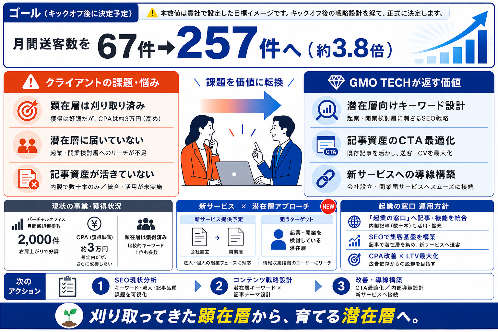

GMOオフィスサポート株式会社 御中
刈り取ってきた顕在層から、育てる潜在層へ。
2026年5月14日

提供役務
貴社のKPI・事業方針に合わせて役務を柔軟に組み合わせて提供します。実施頻度は初期設定値であり、分析結果に応じて随時見直します。
施策の進捗と成果を可視化し、次のアクションに繋げる
施策の方向性を共有し、貴社との認識を揃える
注力すべきキーワードと施策の優先順位を設計する
競合が獲得しているキーワードなど記事の構成案の作成
既存資産の品質を高め、流入・送客の改善を図る
記事からサービスページへの送客率を高める
サイト全体の権威性を高め、順位上昇を促進する
サイトの技術的な問題を解消し、検索評価を向上させる
1年間ロードマップ
キックオフから戦略策定・合意を第一フェーズとし、以降はコンテンツSEOを中心に新規記事制作・既存記事リライトを継続的に展開します。外部対策・CRO対策を適切なタイミングで加えながら、定例会・追加MTGを通じて進捗を共有し、伴走する形で進めます。
| 分類 | 2026年7月 | 8月 | 9月 | 10月 | 11月 | 12月 | 2027年1月 | 2月 | 3月 | 4月 | 5月 | 6月 | 7月〜 |
|---|---|---|---|---|---|---|---|---|---|---|---|---|---|
| 戦略設計 | キックオフ 戦略提示 |
市場調査・競合調査・KW調査・アクセス解析・内部/外部分析・UIUX調査 → 戦略策定・合意 | 次期提案により変動 | ||||||||||
| テクニカルSEO | サイト横断課題の整理 内部関連ルール設計 |
継続 | 継続 | 継続 | 継続 | 継続 | 継続 | 継続 | 継続 | 継続 | |||
| コンテンツSEO | 新規記事構成案の提示 | 継続 | 継続 | 継続 | 継続 | 継続 | 継続 | 継続 | 継続 | ||||
| （同上） | 既存記事のリライト | 継続 | 継続 | 継続 | 継続 | 継続 | 継続 | 継続 | 継続 | ||||
| 外部対策 | リンクリスト提示 | ||||||||||||
| その他 | CRO対策 | ||||||||||||
| コミュニケーション | 定例会 | 継続 | 継続 | 継続 | 継続 | 継続 | 継続 | 継続 | 継続 | 継続 | 継続 | 継続 |
※ 定例会・質疑対応は、都度必要に応じて追加MTGを実施いたします。
契約内容
貴社との契約に関する基本事項を整理しました。費用・成果物・契約条件については本内容をたたき台として、詳細についてすり合わせを進めさせてください。
| 契約期間 | 2026年7月1日 〜 2027年6月30日（1年間） |
| 月額費用 | 50万円（税抜） |
| 支払い条件 | 月末締め翌月末払い |
| 成果物 | 月次レポート・記事構成案改善提案資料・KWリスト など |
| 定例会 | 月1回 |
| 連絡手段 | Slack ／ メール |
| 更新 | 自動更新解約は終了1ヶ月前にご連絡 |